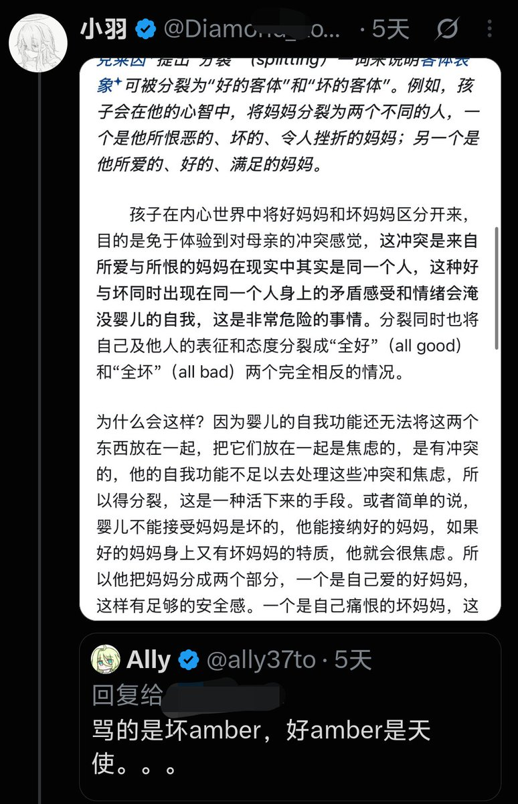

時璃風医詩🌈🏳️🌈
@hagishigure
@ally37to @LanziiLove 克莱因。（
克莱因和婴儿思维没什么重合度的。（
望文生义加断章取义了。（
克莱因的好坏客体简单的来说就是梅洛庞蒂说ta就是卑自然后克莱因偏要说那叫自卑。（

Ally
@ally37to
@LanziiLove 我也被这个人扣过帽子，我回复朋友“骂的是坏amber，好amber是天使”，就被指控是婴儿思维，发了一张写满哲学概念的图片。。。关键是我都不认识他，当时也不是在严肃讨论就是在开玩笑，莫名扣帽子真的非常不尊重别人 https://t.co/2Ts1prAyAj